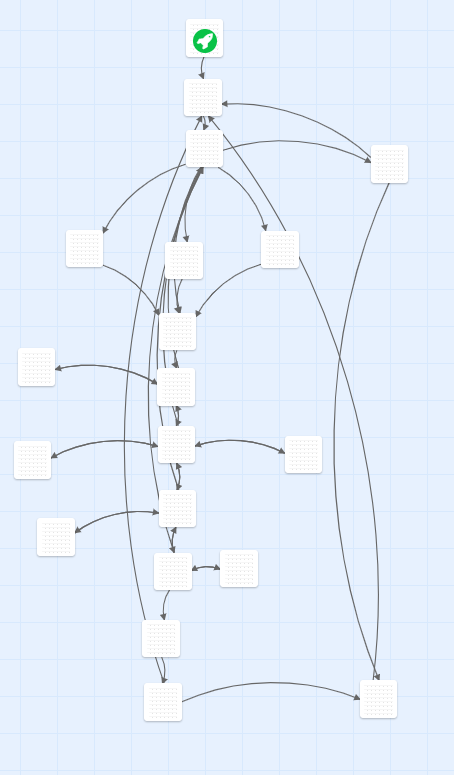
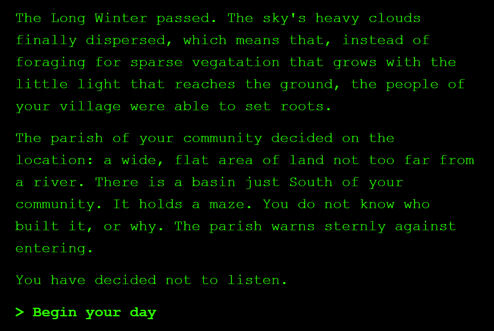
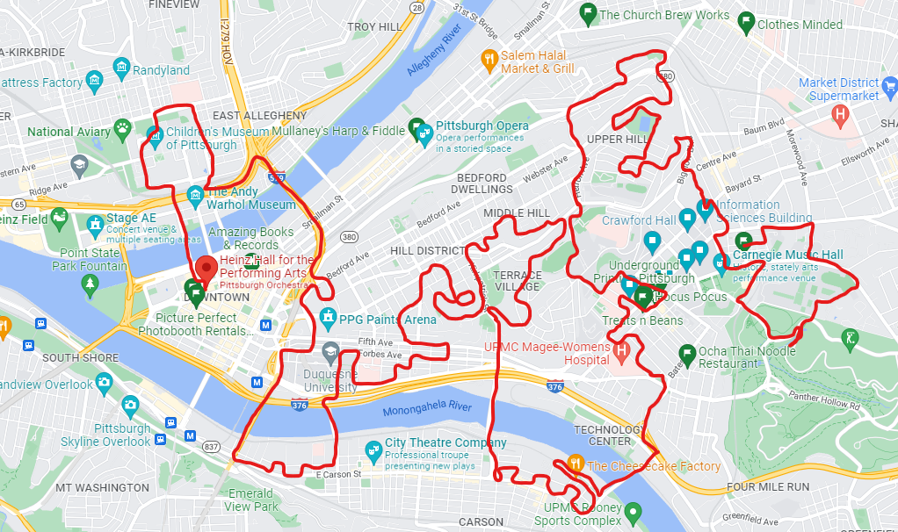

Twine Game
My Twine game, called "Priesthood," poses questions around how to make messages that last tens of thousands of years.
You can play it here.



My Twine game, called "Priesthood," poses questions around how to make messages that last tens of thousands of years.
You can play it here.
My imaginary app introduces friction by functioning as a particularly bad transit app. You can read my Statement of Goals and Choices for this project here.
Here is link to the app pdf.
My video combines video of NYC in the sixties, music by Billie Holiday, and Frank O'Hara's poem "Having a Coke With You."
You can read my Statement of Goals and Choices for this project here.
Some of my thoughts not included in the Statement of Goals and Choices:
- I included a NYC clip with a Coke ad in the background before O’Hara starts reading his poem
- I really liked being able to include the clip from Ferris Bueller’s day off, that’s one of my favorite movies
- In the quick series of portraits flashing, the man with the apple in front of his face, Magritte’s Son of Man, is one of my favorite paintings
- The man dancing in the ballet clip is Vincent Warren, who is actually the subject of O’Hara’s poem
- The Nude Descending the Staircase clip was included in place of a still image of the painting because I thought it was neat :)
- The statue in the pictures at the very end of the video was made by Marino Marini, who was mentioned in the poem; I didn’t know that until making this video, when I looked up the name, saw the statue, and thought “hey, that looks familiar!” I was excited that I could use the pictures of my friends recreating the statue as a tie in on the sculptor